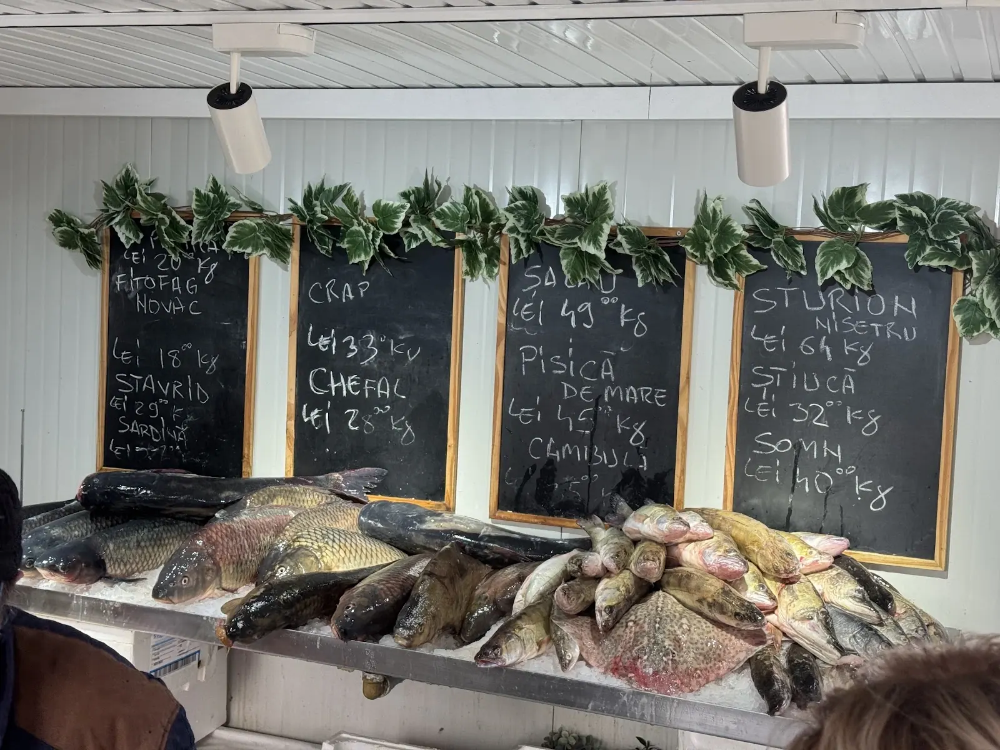
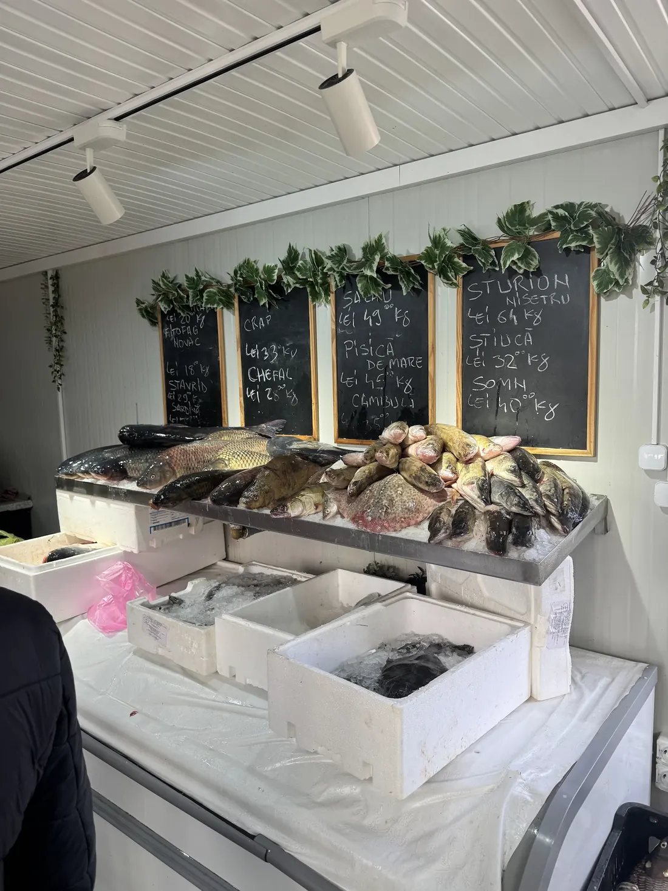
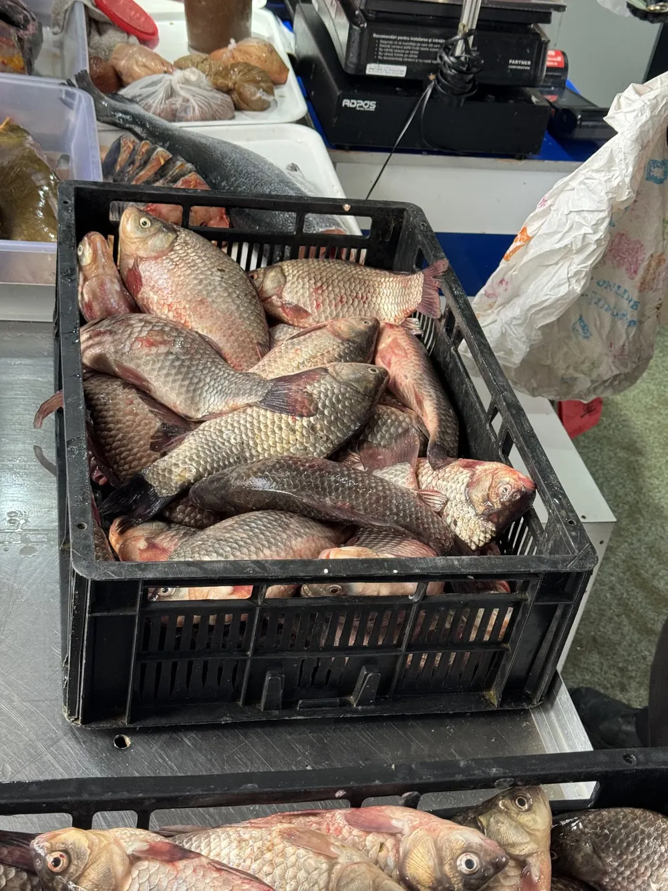
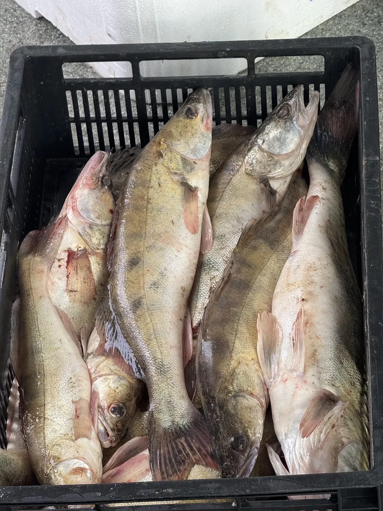
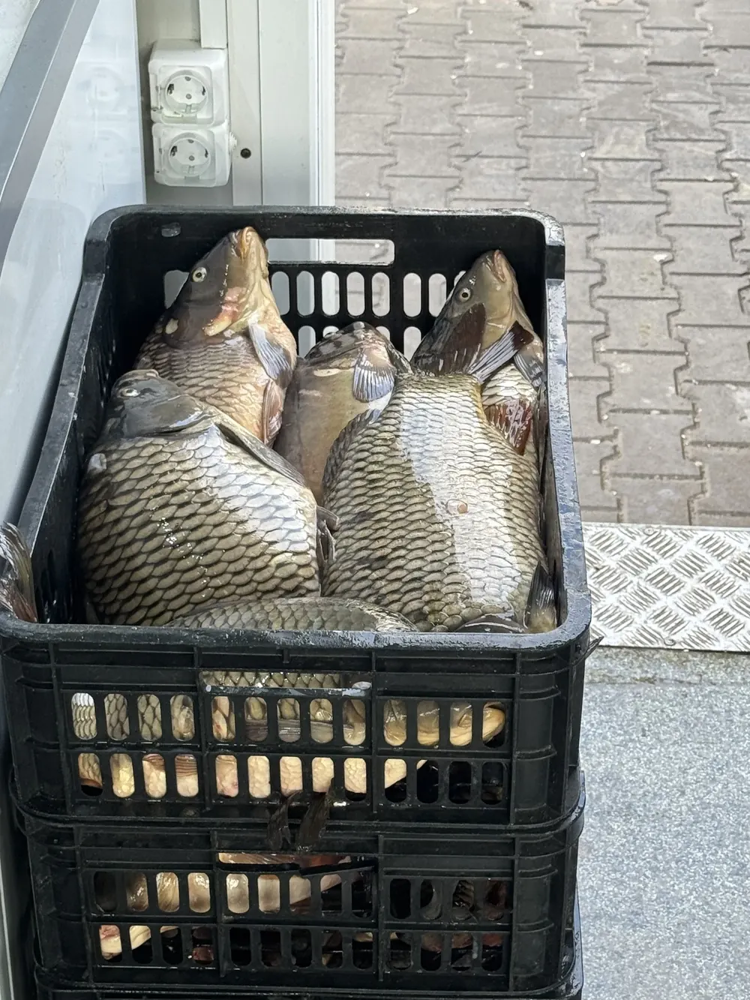
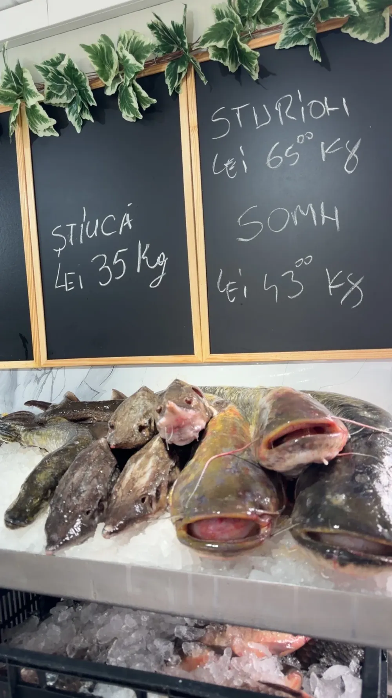
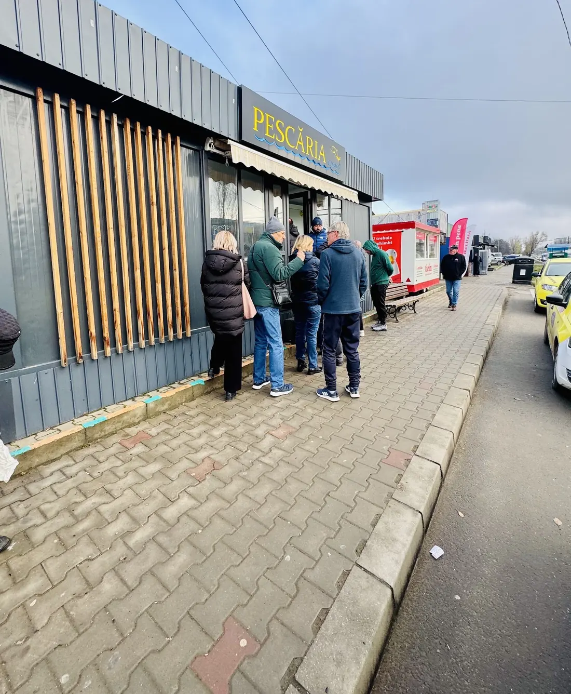
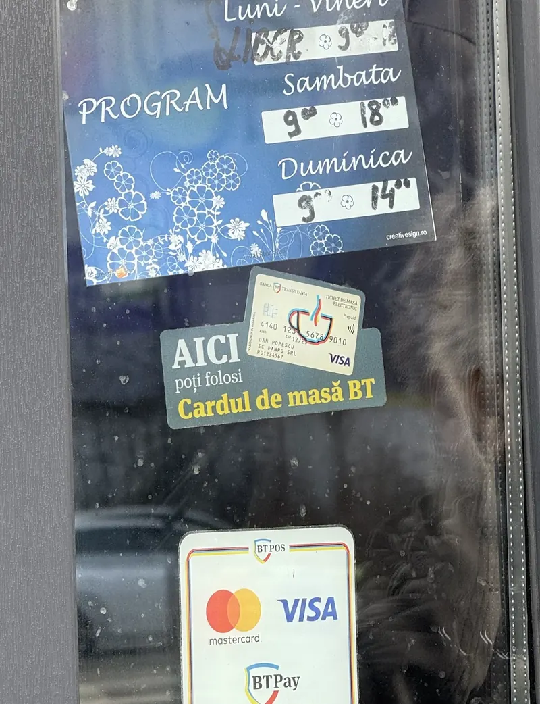

{{pescăria de cartier, din Iași|the neighbourhood fish shop, Iași|a peixaria do bairro, Iași}}
{{Peștele zilei,|Today’s fish,|O peixe do dia,}}{{curățat cât aștepți.|cleaned while you wait.|limpo enquanto espera.}}
{{Caras, crap, somn, știucă, salău, sturion și pește de mare, întinse pe gheață sub tablele cu creta. Suni dinainte și, când ajungi, peștele e deja curățat.|Crucian carp, carp, catfish, pike, zander, sturgeon and sea fish, laid out on ice under the chalkboards. Call ahead and by the time you arrive the fish is already cleaned.|Pimpão, carpa, siluro, lúcio, lucioperca, esturjão e peixe do mar, estendidos no gelo sob os quadros de giz. Ligue antes e, quando chegar, o peixe já está limpo.}}
4,4{{din 17 recenzii pe Google|from 17 Google reviews|em 17 avaliações no Google}}

{{ce scrie pe tablă|what the board says|o que diz o quadro}}
{{Treisprezece pești, patru table.|Thirteen fish, four boards.|Treze peixes, quatro quadros.}}
{{Asta a fost pe tablele din pescărie. Marfa vine și pleacă: ce e azi pe gheață afli dintr-un telefon.|This is what’s been on the shop’s boards. Stock comes and goes: one call tells you what’s on the ice today.|Foi isto que esteve nos quadros da peixaria. O que há muda: uma chamada diz-lhe o que está hoje no gelo.}}
{{cum merge|how it works|como funciona}}
{{Comanzi dinainte, ridici curățat.|Order ahead, pick it up cleaned.|Encomende antes, levante limpo.}}
{{Suni sau scrii|Call or text|Ligue ou escreva}}
{{Spui ce pește vrei și cât. Dacă nu știi exact, întrebi ce e proaspăt azi.|Say which fish and how much. Not sure? Ask what’s fresh today.|Diga que peixe e quanto. Sem certeza? Pergunte o que está fresco hoje.}}
{{Noi îl curățăm|We clean it|Nós limpamos}}
{{Curățatul se face pe loc, în pescărie, cât timp ești pe drum.|Cleaning is done right there in the shop while you’re on your way.|A limpeza é feita ali, na peixaria, enquanto vem a caminho.}}
{{Treci și îl iei|Drop by and take it|Passe e leve}}
{{Plătești și pleci. Fără coadă, fără așteptat la tejghea.|Pay and go. No queue, no waiting at the counter.|Paga e vai. Sem fila, sem esperar ao balcão.}}





{{comandă pentru ridicare|order for pick-up|encomenda para levantar}}
{{Scrie-ți comanda pe tablă.|Write your order on the board.|Escreva a encomenda no quadro.}}
{{Bifezi peștii, pui cantitatea și ora. Comanda se scrie cu creta în dreapta; o trimiți pe WhatsApp sau SMS, sau o spui la telefon.|Tick the fish, set the amount and the time. The order is chalked up on the right; send it by WhatsApp or SMS, or read it out on the phone.|Marque os peixes, a quantidade e a hora. A encomenda escreve-se a giz à direita; envie por WhatsApp ou SMS, ou diga-a ao telefone.}}
{{Comanda|The order|A encomenda}}
- {{bifează un pește în stânga…|tick a fish on the left…|marque um peixe à esquerda…}}
—
{{ce spun clienții|what customers say|o que dizem os clientes}}
{{„Când am ajuns, peștele era curățat.”|“When I got there, the fish was cleaned.”|«Quando cheguei, o peixe estava limpo.»}}
{{A comandat prin telefon, iar când a mers să ridice peștele era deja curățat. Produse proaspete, personal amabil: nota 10.|She ordered by phone, and when she went to pick it up the fish was already cleaned. Fresh products, friendly staff: 10 out of 10.|Encomendou por telefone e, quando foi levantar, o peixe já estava limpo. Produtos frescos, pessoal simpático: nota 10.}}
{{Pești proaspeți, prețuri accesibile, personal dedicat. A luat caras și a fost foarte mulțumit; au și curățare pe loc.|Fresh fish, fair prices, dedicated staff. He bought crucian carp and was very happy; they also clean on the spot.|Peixe fresco, preços acessíveis, pessoal dedicado. Levou pimpão e ficou muito satisfeito; também limpam na hora.}}
{{Carasul a fost bun, dulce și proaspăt, chiar dacă era luat de pe gheață. Revine cu siguranță.|The crucian carp was good, sweet and fresh, even straight off the ice. He’ll definitely be back.|O pimpão estava bom, doce e fresco, mesmo vindo do gelo. Vai voltar de certeza.}}
{{program și loc|hours & place|horário e local}}
{{Luni ne odihnim. În rest, venim cu pește.|Mondays we rest. Every other day, there’s fish.|À segunda descansamos. Nos outros dias, há peixe.}}
—
{{Programul e cel din Google Maps; de sărbători sună înainte.|Hours as listed on Google Maps; on holidays, call ahead.|Horário conforme o Google Maps; nos feriados, ligue antes.}}
{{Chioșcul negru cu firma aurie PESCĂRIA, Iași|The black kiosk with the gold PESCĂRIA sign, Iași|O quiosque preto com o letreiro dourado PESCĂRIA, Iași}}
{{Cod Plus: 4JW6+R6 Iași · adresa exactă: de confirmat|Plus Code: 4JW6+R6 Iași · exact address: to be confirmed|Plus Code: 4JW6+R6 Iași · morada exata: a confirmar}}
{{Deschide în Google Maps|Open in Google Maps|Abrir no Google Maps}}Facebook
{{Pe ușă scrie că poți plăti cu cardul (Visa, Mastercard), cu BT Pay sau cu cardul de masă BT.|The door says you can pay by card (Visa, Mastercard), BT Pay or a BT meal card.|Na porta diz que pode pagar com cartão (Visa, Mastercard), BT Pay ou cartão de refeição BT.}}

